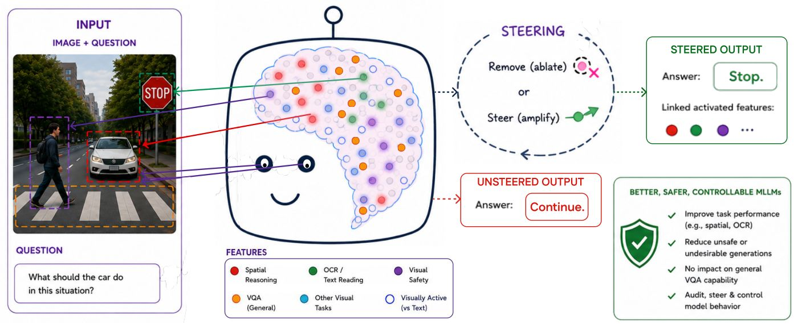
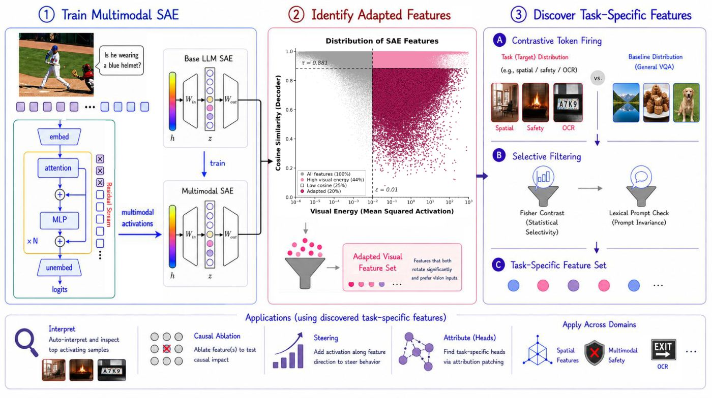

1University of Oxford · 2Microsoft · *equal contribution · †equal advising
TL;DRWe diff the base-LM SAE against the multimodal SAE to isolate vision-adapted features, then use contrastive per-token firing to isolate task-specific features, which we causally remove or steer to control MLLM behaviour across spatial reasoning, safety and OCR.

Multimodal LLMs read text, localize objects and reason about space, but we cannot identify the internal features behind any capability. So we cannot explain failures, suppress unsafe behaviour, or steer a capability without retraining.
Multimodal Large Language Models (MLLMs) exhibit strong visual understanding, yet the internal features that cause these behaviors remain difficult to identify, audit, or control. While applicable to post-hoc inspection, hidden states that are decomposed into interpretable feature directions using sparse autoencoders (SAEs) neither readily isolate which features are changed by multimodal training, nor are they directly useful for targeted control. We introduce MMDiff, a multimodal model-diffing framework that trains multimodal SAEs and turns them into feature-level interfaces for discovering and controlling multimodal behavior. MMDiff supports three uses: (i) feature isolation, by diffing a base-LM SAE against its multimodal-adapted counterpart to identify features altered by multimodal training; (ii) task-specific feature detection, via per-token contrastive firing analysis that isolates causal features; and (iii) feature-level control, by causally removing or steering the discovered feature directions. We train multimodal SAEs for three MLLM families, LLaVA-MORE, PaliGemma 2, and InternVL3.5, and evaluate on visual-spatial understanding, multimodal safety, and OCR. MMDiff discovers sparse, causally specific features whose removal selectively degrades target behaviors by an average of 12% on spatial tasks and 17% on OCR, and reduces attack success rate by 24% on multimodal safety attacks, with no impact on VQA performance. Steering these features improves spatial and OCR accuracy by +3.6% and +1.8% on average over a standard single-layer steering baseline. These results show that multimodal SAEs can serve not only as interpretability tools, but as mechanisms for auditing, steering, and controlling MLLMs behavior toward safer and more capable generations.
Pipeline

Interventions
Generations from PaliGemma 2 on held-out samples. The two columns differ only in a single feature direction, projected out or injected at its own layer.
Results
Projecting out a discovered feature degrades its target behaviour while general VQA and the domain control remain within one point.
Same pipeline, unchanged thresholds, three MLLM families with different language backbones, vision encoders and SAE objectives.
| Model | Backbone | SAE | Mean ΔVSR | Max |ΔVQA| |
|---|---|---|---|---|
| MMDiff-Llama | LLaMA-3.1-8B | TopK | −10.1% | 0.8% |
| MMDiff-Gemma | Gemma-2-2B | JumpReLU | −12.3% | 1.0% |
| MMDiff-Qwen | Qwen3-1.7B | TopK | −14.6% | 1.5% |
On VLSBench, where harmful intent is visible only in the image. One feature per category, removed individually. ΔCtrl is measured on MSSBench-safe, where both image and instruction are benign.
| Feature | Category | ΔASR | ΔVQA | ΔCtrl |
|---|---|---|---|---|
| L21/F12020 | Self-Harm | −28.14 | +0.90 | +1.00 |
| L23/F13965 | Erotic | −26.59 | −0.70 | 0.00 |
| L17/F3967 | Privacy | −25.99 | −0.10 | 0.00 |
| L13/F5205 | Violent | −24.43 | −0.10 | 0.00 |
| L9/F9066 | Hate | −21.08 | −0.80 | +1.00 |
| L7/F5567 | Illegal Activity | −17.96 | +0.70 | 0.00 |
| Mean | −9.67% | −0.03% | +0.41% | |
Every feature cuts attack success by 18–28% while leaving general VQA and benign behaviour within one point.
Removal is scored on the feature's own OCRBench category; the control is a non-OCR VQA subset.
| Feature | Category | ΔOCRBench | ΔVQA | ΔCtrl |
|---|---|---|---|---|
| L19/F10089 | Scene text | −28.0 | +0.2 | −0.4 |
| L17/F13602 | Scene text | −16.5 | +0.9 | +0.6 |
| L20/F10687 | Non-semantic | −16.0 | +0.6 | +0.4 |
| L21/F9577 | Digit string | −14.0 | −1.6 | −1.8 |
| L19/F14093 | Irregular | −10.0 | −0.5 | −1.0 |
| Mean | −16.9% | ≤1.6% | ≤1.8% | |
Two baselines, from opposite directions. Simpler selection rules over the same dictionary find features that hurt the task and wreck general VQA. Training a dictionary from scratch on multimodal activations, with no base-LM warm start, finds features with no causal effect at all.
| Selection rule | ΔVSR | ΔVQA |
|---|---|---|
| Randomly-selected features | −0.5% | −0.2% |
| SAE trained from scratch on MLLM activations (LLaVA-MORE) | +0.22% | +0.07% |
| Contrastive firing only | −15.1% | −25.9% |
| + visual responsiveness | −15.9% | −26.3% |
| + lexical-invariance filter | −14.6% | −24.4% |
| + adapted-feature filter | −1.0% | −0.2% |
| Full MMDiff pipeline | −12.3% | −0.1% |
Only the full pipeline is both causally effective and selective. The from-scratch dictionary degenerates: its top features all sit in one early layer and fire on every sample, so contrastive ranking cannot separate task features from always-on ones.
Citation
@inproceedings{batra2026mmdiff,
title = {Multimodal Model Diffing for Feature Discovery and Control},
author = {Batra, Hunar and Naghashyar, Lachin and Khakzar, Ashkan
and Torr, Philip and Schroeder de Witt, Christian
and Venhoff, Constantin and Clark, Ronald},
year = {2026},
eprint = {2608.09928},
archivePrefix = {arXiv},
primaryClass = {cs.CV},
url = {https://arxiv.org/abs/2608.09928},
}